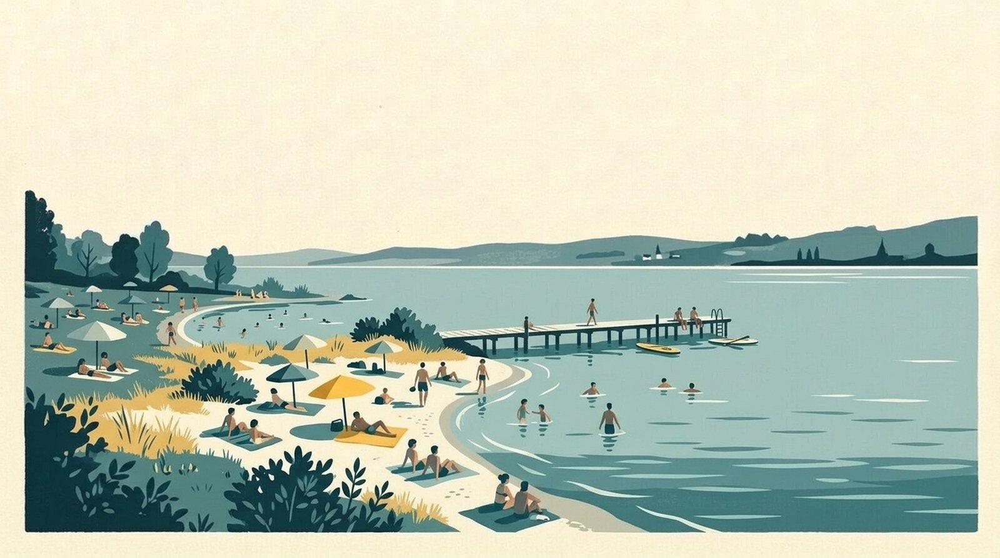

Kurz gesagt
Laut MeteoSchweiz war der Sommer 2026 (Juni bis August) der heisseste seit Messbeginn 1864: 17,2 °C im landesweiten Mittel (Stand 24. August), rund 0,3 °C über 2003 und 3,4 °C über der Norm 1991–2020. Am 30. Juli erreichte Basel 39,7 °C und egalisierte den Rekord der Alpennordseite.
Die Zahlen
- Sommermittel: 17,2 °C (Stand 24. August 2026), gegenüber rund 16,2 °C 2022 auf Platz drei.
- 39,7 °C in Basel-Binningen am 30. Juli; 38,1 °C in Neuenburg, 38,3 °C in Zürich-Kloten.
- Rekord-Tiefstwert: 25,3 °C in Lugano am 27. Juni 2026.
- Nördlich der Alpen bis zu 12 bis 13 Hitzetage (30 °C und mehr) in Folge im Juni.
Kein Aufatmen im Süden
Südlich der Alpen folgten die Hitzetage fast ohne Unterbruch bis zum 19. August. Gegenüber 1871–1900 ist ein durchschnittlicher Sommer heute rund 4 °C wärmer, hält MeteoSchweiz fest.
Und die Seen
Rekordwarmes Oberflächenwasser in 23 von 24 Seen und Rekordtiefstände: Trockenheit 2026 und Seepegel. Was die Hitze unter Wasser verändert: Hitzewellen und Seen. Baden bei grosser Hitze: Hitzewelle und Baden.
Ein Sommer der Zukunft?
MeteoSchweiz und die ETH Zürich verglichen den Sommer 2026 mit dem mittleren Sommer einer um 3 °C wärmeren Welt, auf die die heutigen Massnahmen bis Ende Jahrhundert zusteuern: 2026 wäre dort ein durchschnittlicher, eher kühler Sommer. Im Flachland zählte 2026 35 bis 55 Hitzetage; in einer 3-Grad-Welt wären nördlich der Alpen 30 bis 40 pro Jahr zu erwarten, im Süden rund 50. Tropennächte sind an den Seen, an Hängen und in Städten häufiger.
Wasser und Wind von heute, Badeplatz für Badeplatz, stehen in der App Mein See.
Das Wasser des Sees im Moment
Die Wassertemperatur jedes Badeplatzes steht in der App Mein See, alle drei Stunden aktualisiert.